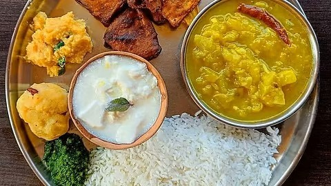
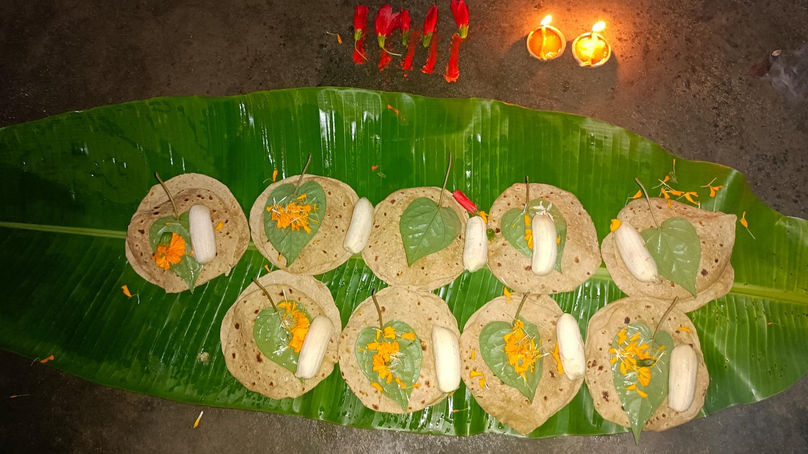
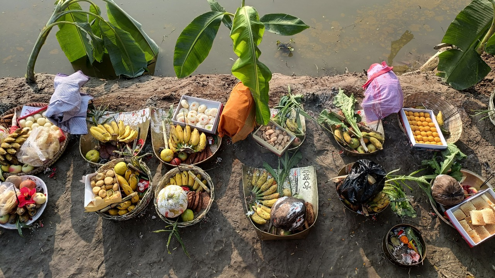
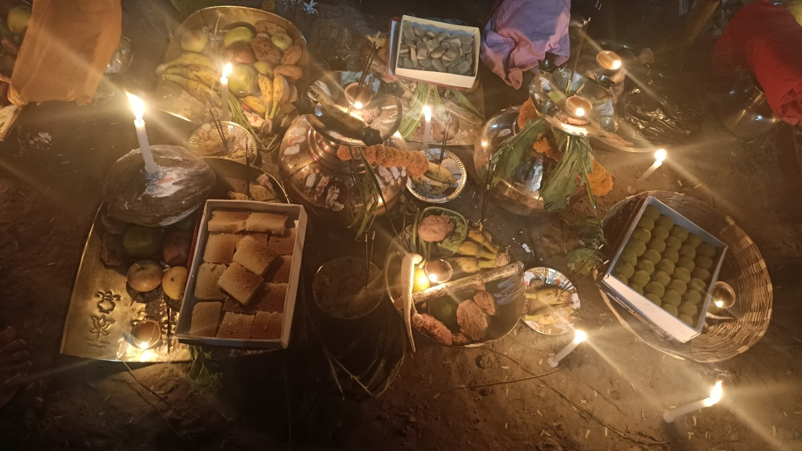

🙏 Chhath Puja Rituals & Steps 🙏
Experience the sacred rituals of Chhath Puja, a festival of devotion and gratitude towards the Sun God. 🌞
Experience the sacred rituals of Chhath Puja, a festival of devotion and gratitude towards the Sun God. 🌞



